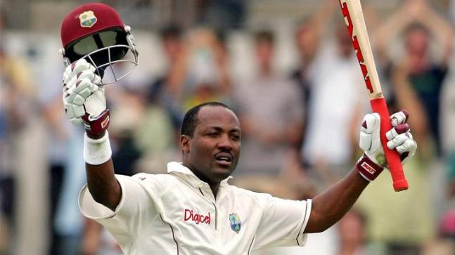

Brian Charles Lara, TC, OCC (born 2 May 1969) is a Trinidadian former international cricketer, widely acknowledged as one of the greatest batsmen of all time. He holds several cricketing records, including the record for the highest individual score in first-class cricket, with 501 not out for Warwickshire against Durham at Edgbaston in 1994, and the record for the highest individual score in an international Test innings, after scoring 400 not out at Antigua during the 4th test against England in 2004.
Lara also held, for 18 years, the record of scoring the highest number of runs in a single over of a Test match when he scored 28 runs off an over by Robin Peterson of South Africa in 2003, until his record was overtaken by Jasprit Bumrah in 2022.As captain, Lara led the West Indies team to win the 2004 ICC Champions Trophy, the first time the team won any major ICC trophy since winning the 1979 Cricket World Cup.
Lara topped the Test batting rankings on several occasions, and his match-winning performance of 153 not out against Australia in Bridgetown, Barbados in 1999 was rated by Wisden the second-best batting performance in the history of Test cricket, next only to the 270 runs scored by Sir Donald Bradman in The Ashes Test match of 1937. Muttiah Muralitharan has hailed Lara as his toughest opponent among all batsmen in the world.
International Career
In 1990 Lara made his belated Test debut for West Indies against Pakistan, scoring 44 and 5. He had made his ODI debut a month earlier against Pakistan, scoring 11.
In January 1993, Lara scored 277 versus Australia in Sydney. This, his maiden Test century in his fifth Test, was the turning point of the series as West Indies won the final two Tests to win the series 2-1. Lara went on to name his daughter Sydney after scoring 277 at SCG.
Lara holds several world records for high scoring. He has the highest individual score in both first-class cricket (501 not out for Warwickshire against Durham in 1994) and Test cricket (400 not out for the West Indies against England in 2004). Lara amassed his world record 501 in 474 minutes off only 427 balls. He hit 308 in boundaries (10 sixes and 62 fours). His partners were Roger Twose (115 partnership - 2nd wicket), Trevor Penney (314 - 3rd), Paul Smith (51 - 4th) and Keith Piper (322 unbroken - 5th). Earlier in that season Lara scored six centuries in seven innings while playing for Warwickshire.

Lara celebrating his century
He is the only man to have reclaimed the Test record score, having scored 375 against England in 1994, a record that stood until Matthew Hayden's 380 against Zimbabwe in 2003. His 400 not out also made him the second player (after Donald Bradman) to score two Test triple-centuries, and the second (after Bill Ponsford) to score two first-class quadruple-centuries. He has scored nine double-centuries in Test cricket, third after Bradman's twelve and Kumar Sangakkara's eleven. As a captain, he scored five double-centuries, which is the highest by any one who is in charge. In 1995 Lara in the Test match away series against England, scored 3 centuries in three consecutive Matches which earned him the Man of the Series award. The Test Series was eventually drawn 2-2. He also held the record for the highest total number of runs in a Test career, after overtaking Allan Border in an innings of 226 played at Adelaide Oval, Australia in November 2005. This was later broken by Sachin Tendulkar of India on 17 October 2008 whilst playing against Australia at Mohali in the 2nd Test of the Border-Gavaskar Trophy 2008.
On 19 April 2007 Lara announced his retirement from all forms of international cricket, indicating that the West Indies vs England match on 21 April 2007 would be his last international appearance. He was run out after a bad mixup with Marlon Samuels for 18, as England went on to win the match by one wicket.
He announced before the 2007 Cricket World Cup that this would be his last appearance in One Day Internationals. After his last match, in the post-game presentation interview, he asked the fans, "Did I entertain?", to which he received a resounding cheer from the crowd, after which he went out and took his 'lap of honour' where he met and shook hands with many of the fans. Lara stated this would be his last appearance in international cricket, he has also indicated his interest in retaining some involvement in the sport.
Honours
In 2009, Lara was made an honorary Member of the Order of Australia (AM) for services to West Indian and Australian cricket.
Lara was one of four persons to receive the highest award of the Caribbean Community (Caricom) in July. Lara received an honorary doctorate from the University of Sheffield on Wednesday 10 January 2007. The ceremony took place at the Trinidad Hilton, Port of Spain, Trinidad and Tobago.
In September 2009, Lara was inducted as an honorary lifetime member of the Royal St. Kitts Golf Club.
On 29 October 2011 Lara was conferred with an honorary doctorate of laws by the University of the West Indies, St Augustine.
On 14 September 2012 he was inducted to the ICC's Hall of Fame at the awards ceremony held in Colombo, Sri Lanka as a 2012-13 season inductee.
The Brian Lara Stadium, in Trinidad and Tobago, opened in 2017, was named in his honour.
On 4 July 2019 Lara was bestowed with an honorary doctorate by the D Y Patil International University of India.
Records
He became the first man to score seven centuries in eight first-class innings, the first being the record 375 against England and the last being the record 501 not out against Durham.
After Matthew Hayden had eclipsed his Test record for highest individual score 375 by five runs in 2003, he reclaimed the record scoring 400 not out in 2004 against England. With these innings he became the second player to score two Test triple-centuries, the first & only player to score two 350-plus scores in test history, the second player to score two career quadruple-centuries after Bill Ponsford, the only player to achieve both these milestones, and regained the distinction of being the holder of both the record first-class individual innings and the record Test individual innings. He is the only player to break the world record twice.
He also set the record for the highest individual test score as captain (400*)
He was the all-time leading run scorer in Test cricket, a record he attained on 26 November 2005 until surpassed by Sachin Tendulkar on 17 October 2008.
Lara has scored 20% of his team runs, a feat surpassed only by Bradman (23%) and George Headley (21%). Lara scored 688 runs (42% of team output, a record for a series of three or more Tests, and the second-highest aggregate runs in history for a three-Test series) in the 2001-02 tour of Sri Lanka read more